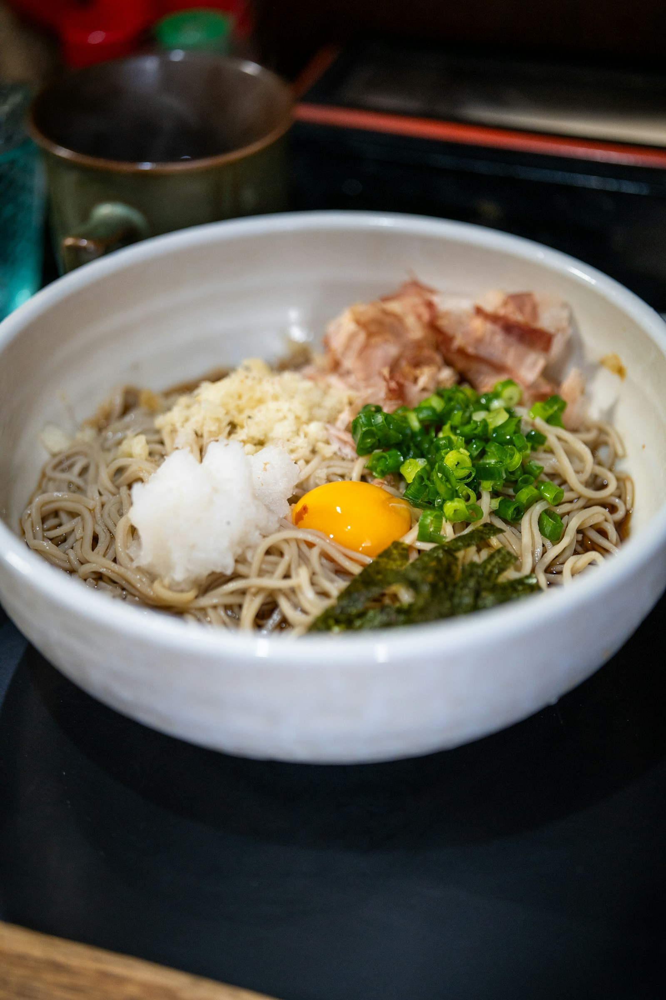

Where the Allegheny cultivars announce themselves with muscular authority, the Koto Estate arrives in a whisper of extraordinary refinement. Steamed rice — not the heavy, starchy variety but the light, fragrant short-grain of a Kyoto kaiseki — mingles with jasmine and a white mineral underpinning that suggests the volcanic pumice soils of the central Hokkaido plateau. The nose is restrained to the point of reticence on first encounter; patience is not merely advised but required. Ten minutes of patient observation reveals increasing depth: cold river water, white peach skin, the faintest echo of sesame that never quite materialises and is all the more compelling for it.
Pristine clarity is the defining characteristic. The Koto Estate achieves a textural silkiness that Western terroirs have not yet replicated — a function, the Hokkaido masters insist, of the snowmelt irrigation that replenishes the terraces between June and August. Delicate umami registers in the mid-palate without the heaviness that afflicts lesser expressions of this variety; it is present as suggestion rather than declaration. The finish extends with extraordinary length on a note of cold white mineral and rice bran, then resolves cleanly, leaving no residue, only memory.
The finest expression of Hokkaido buckwheat currently in production. A cultivar of philosophical quietude that rewards the practised connoisseur. This critic has returned to it three times while writing these notes.
Koto was developed by the Hokkaido National Agricultural Research Centre in 1988 for the specific conditions of the central plateau. The Estate programme at the Nakamura-Ito family farm selects from a single 45-acre plot at 320 metres elevation, where volcanic loam and exceptional drainage produce groats of unusual purity. Harvest by hand in late August; stone-milling within 4 hours.
| Vintage | Score | Notes |
|---|---|---|
| 2021 | 95 | Legendary. Perfect summer; mineral at full concentration. |
| 2020 | 92 | Outstanding. Typhoon season curtailed but didn't ruin. |
| 2019 | 94 | Outstanding. Close to 2021; slightly less persistent. |
| 2018 | 90 | Excellent. Warm summer yielded a rounder, more forward style. |
| 2017 | 93 | Outstanding. The first vintage of the estate-selection programme. |
Serve the Koto Estate with dishes that share its philosophy of restraint. Cold soba noodles with house-made tsuyu is the canonical pairing and a deeply satisfying one. Scallop sashimi, barely dressed, allows the umami quality of the cultivar to find its counterpart. On a Western table, a fine bone-china cup of white miso soup draws out the mineral character. Avoid assertive cheeses; they overwhelm what is subtle by design.
The Koto Estate packaging uses washi-wrapped lacquer tins with a tamper-evident seal of Japanese cherry wood. Store at 8-12°C in conditions of moderate humidity (50-60%). Do not store near aromatic spices. Optimal window: 4-10 months from milling, which is hand-stamped in ink on the base of each tin.